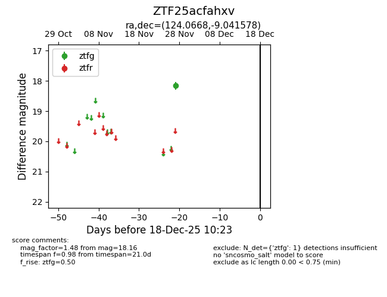
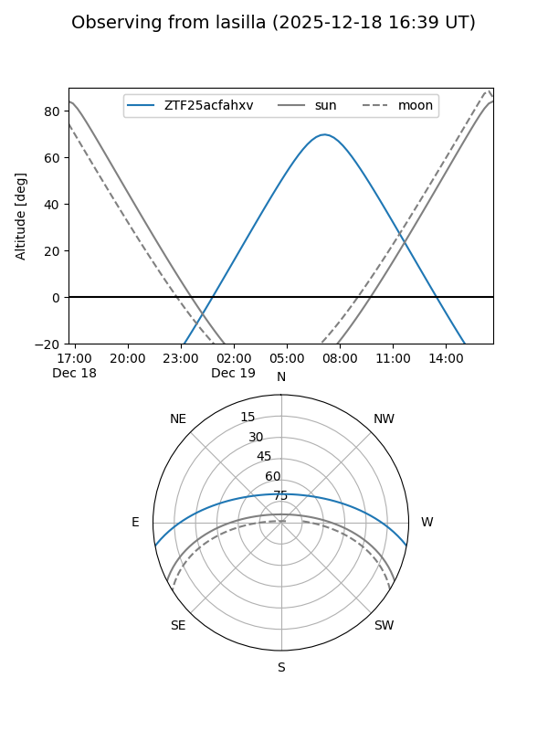
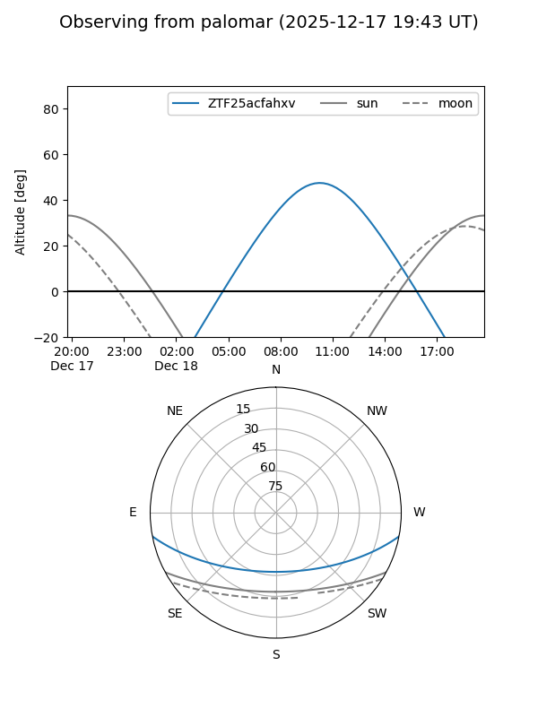

ZTF25acfahxv
Target ZTF25acfahxv at 2025-12-18 11:17
Aliases and brokers:
FINK: fink-portal.org/ZTF25acfahxv
Lasair: lasair-ztf.lsst.ac.uk/objects/ZTF25acfahxv
ALeRCE: alerce.online/object/ZTF25acfahxv
alt names
ZTF25acfahxv (ztf,fink_ztf)
Coordinates:
equatorial (ra, dec) = 124.0668,-9.04158
equatorial (HMS+DMS) = 08:16:16.04,-09:02:29.68
galactic (l, b) = (231.1350,+14.25805)
Photometry
last ztfg=18.16
1 ztfg detections
Lightcurve

Visibility


Additional plots